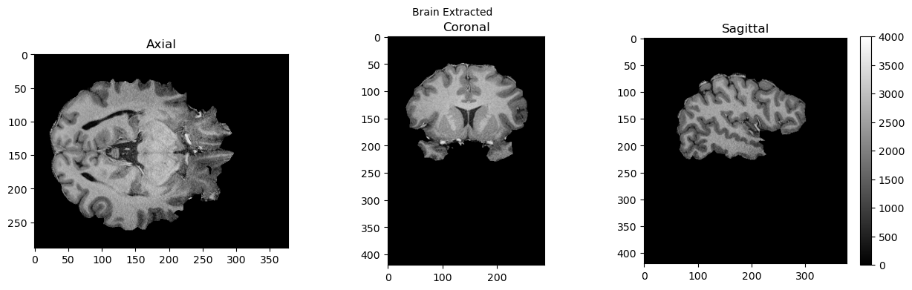
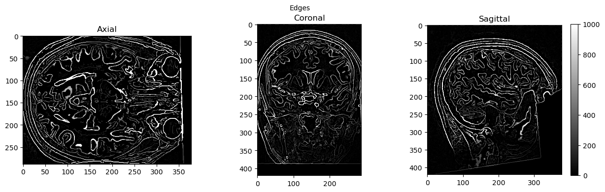

Basic Nipype Example#
Author: Steffen Bollmann
Setup Neurodesk#
import os
import sys
IN_COLAB = 'google.colab' in sys.modules
if IN_COLAB:
os.environ["LD_PRELOAD"] = "";
os.environ["APPTAINER_BINDPATH"] = "/content,/tmp,/cvmfs"
os.environ["MPLCONFIGDIR"] = "/content/matplotlib-mpldir"
os.environ["LMOD_CMD"] = "/usr/share/lmod/lmod/libexec/lmod"
!curl -J -O https://raw.githubusercontent.com/NeuroDesk/neurocommand/main/googlecolab_setup.sh
!chmod +x googlecolab_setup.sh
!./googlecolab_setup.sh
os.environ["MODULEPATH"] = ':'.join(map(str, list(map(lambda x: os.path.join(os.path.abspath('/cvmfs/neurodesk.ardc.edu.au/neurodesk-modules/'), x),os.listdir('/cvmfs/neurodesk.ardc.edu.au/neurodesk-modules/')))))
from google.colab import output
output.enable_custom_widget_manager()
!pip install ipyniivue
# Output CPU information:
!cat /proc/cpuinfo | grep 'vendor' | uniq
!cat /proc/cpuinfo | grep 'model name' | uniq
vendor_id : GenuineIntel
model name : Intel(R) Xeon(R) Platinum 8167M CPU @ 2.00GHz
Demonstrating the module system in Python and Nipype#
# we can use lmod to load fsl in a specific version
import lmod
await lmod.load('fsl/6.0.4')
await lmod.list()
['Lmod',
'Warning:',
'The',
'environment',
'MODULEPATH',
'has',
'been',
'changed',
'in',
'unexpected',
'ways.',
'Lmod',
'is',
'unable',
'to',
'use',
'given',
'MODULEPATH.',
'It',
'is',
'using:',
'"/cvmfs/neurodesk.ardc.edu.au/neurodesk-modules/functional_imaging:/cvmfs/neurodesk.ardc.edu.au/neurodesk-modules/rodent_imaging:/cvmfs/neurodesk.ardc.edu.au/neurodesk-modules/image_registration:/cvmfs/neurodesk.ardc.edu.au/neurodesk-modules/structural_imaging:/cvmfs/neurodesk.ardc.edu.au/neurodesk-modules/image_segmentation:/cvmfs/neurodesk.ardc.edu.au/neurodesk-modules/quantitative_imaging:/cvmfs/neurodesk.ardc.edu.au/neurodesk-modules/workflows:/cvmfs/neurodesk.ardc.edu.au/neurodesk-modules/hippocampus:/cvmfs/neurodesk.ardc.edu.au/neurodesk-modules/image_reconstruction:/cvmfs/neurodesk.ardc.edu.au/neurodesk-modules/data_organisation:/cvmfs/neurodesk.ardc.edu.au/neurodesk-modules/electrophysiology:/cvmfs/neurodesk.ardc.edu.au/neurodesk-modules/phase_processing:/cvmfs/neurodesk.ardc.edu.au/neurodesk-modules/programming:/cvmfs/neurodesk.ardc.edu.au/neurodesk-modules/machine_learning:/cvmfs/neurodesk.ardc.edu.au/neurodesk-modules/diffusion_imaging:/cvmfs/neurodesk.ardc.edu.au/neurodesk-modules/body:/cvmfs/neurodesk.ardc.edu.au/neurodesk-modules/visualization:/cvmfs/neurodesk.ardc.edu.au/neurodesk-modules/spectroscopy:/cvmfs/neurodesk.ardc.edu.au/neurodesk-modules/quality_control:/cvmfs/neurodesk.ardc.edu.au/neurodesk-modules/statistics:/cvmfs/neurodesk.ardc.edu.au/neurodesk-modules/shape_analysis:/cvmfs/neurodesk.ardc.edu.au/neurodesk-modules/spine:/cvmfs/neurodesk.ardc.edu.au/neurodesk-modules/molecular_biology:/cvmfs/neurodesk.ardc.edu.au/neurodesk-modules/bids_apps::".',
'Please',
'use',
'"module',
'use',
'to',
'change',
'MODULEPATH',
'instead.',
'fsl/6.0.4']
from nipype.interfaces.fsl.base import Info
print(Info.version())
# if the FSL version is changed using lmod above, the kernel of the notebook needs to be restarted!
---------------------------------------------------------------------------
KeyboardInterrupt Traceback (most recent call last)
Cell In[4], line 1
----> 1 from nipype.interfaces.fsl.base import Info
2 print(Info.version())
3 # if the FSL version is changed using lmod above, the kernel of the notebook needs to be restarted!
File ~/.local/lib/python3.10/site-packages/nipype/interfaces/fsl/__init__.py:26
11 from .base import FSLCommand, Info, check_fsl, no_fsl, no_fsl_course_data
12 from .preprocess import (
13 FAST,
14 FLIRT,
(...)
24 FIRST,
25 )
---> 26 from .model import (
27 Level1Design,
28 FEAT,
29 FEATModel,
30 FILMGLS,
31 FEATRegister,
32 FLAMEO,
33 ContrastMgr,
34 MultipleRegressDesign,
35 L2Model,
36 SMM,
37 MELODIC,
38 SmoothEstimate,
39 Cluster,
40 Randomise,
41 GLM,
42 )
43 from .utils import (
44 AvScale,
45 Smooth,
(...)
73 Vest2Text,
74 )
76 from .epi import (
77 PrepareFieldmap,
78 TOPUP,
(...)
85 EddyQuad,
86 )
File ~/.local/lib/python3.10/site-packages/nipype/interfaces/fsl/model.py:34
20 from ..base import (
21 File,
22 traits,
(...)
29 BaseInterfaceInputSpec,
30 )
31 from .base import FSLCommand, FSLCommandInputSpec, Info
---> 34 class Level1DesignInputSpec(BaseInterfaceInputSpec):
35 interscan_interval = traits.Float(
36 mandatory=True, desc="Interscan interval (in secs)"
37 )
38 session_info = traits.Any(
39 mandatory=True,
40 desc=("Session specific information generated " "by ``modelgen.SpecifyModel``"),
41 )
File ~/.local/lib/python3.10/site-packages/nipype/interfaces/fsl/model.py:88, in Level1DesignInputSpec()
60 orthogonalization = traits.Dict(
61 traits.Int,
62 traits.Dict(traits.Int, traits.Either(traits.Bool, traits.Int)),
(...)
68 usedefault=True,
69 )
70 model_serial_correlations = traits.Bool(
71 desc="Option to model serial correlations using an \
72 autoregressive estimator (order 1). Setting this option is only \
(...)
75 mandatory=True,
76 )
77 contrasts = traits.List(
78 traits.Either(
79 traits.Tuple(
80 traits.Str,
81 traits.Enum("T"),
82 traits.List(traits.Str),
83 traits.List(traits.Float),
84 ),
85 traits.Tuple(
86 traits.Str,
87 traits.Enum("T"),
---> 88 traits.List(traits.Str),
89 traits.List(traits.Float),
90 traits.List(traits.Float),
91 ),
92 traits.Tuple(
93 traits.Str,
94 traits.Enum("F"),
95 traits.List(
96 traits.Either(
97 traits.Tuple(
98 traits.Str,
99 traits.Enum("T"),
100 traits.List(traits.Str),
101 traits.List(traits.Float),
102 ),
103 traits.Tuple(
104 traits.Str,
105 traits.Enum("T"),
106 traits.List(traits.Str),
107 traits.List(traits.Float),
108 traits.List(traits.Float),
109 ),
110 )
111 ),
112 ),
113 ),
114 desc="List of contrasts with each contrast being a list of the form - \
115 [('name', 'stat', [condition list], [weight list], [session list])]. if \
116 session list is None or not provided, all sessions are used. For F \
117 contrasts, the condition list should contain previously defined \
118 T-contrasts.",
119 )
File ~/.local/lib/python3.10/site-packages/traits/trait_types.py:2674, in List.__init__(self, trait, value, minlen, maxlen, items, **metadata)
2671 if value is None:
2672 value = []
-> 2674 self.item_trait = trait_from(trait)
2675 self.minlen = max(0, minlen)
2676 self.maxlen = max(minlen, maxlen)
File ~/.local/lib/python3.10/site-packages/traits/trait_converters.py:96, in trait_from(obj)
93 return Any().as_ctrait()
95 try:
---> 96 return as_ctrait(obj)
97 except TypeError:
98 return Trait(obj)
File ~/.local/lib/python3.10/site-packages/traits/trait_converters.py:63, in as_ctrait(obj)
44 """ Convert to CTrait if the object knows how, else raise TraitError.
45
46 Parameters
(...)
60 If the object does not support conversion to CTrait.
61 """
62 if isinstance(obj, type) and hasattr(obj, 'instantiate_and_get_ctrait'):
---> 63 return obj.instantiate_and_get_ctrait()
64 elif not isinstance(obj, type) and hasattr(obj, 'as_ctrait'):
65 return obj.as_ctrait()
File ~/.local/lib/python3.10/site-packages/traits/trait_type.py:452, in TraitType.instantiate_and_get_ctrait(cls)
445 @classmethod
446 def instantiate_and_get_ctrait(cls):
447 """ Instantiate the class an return a CTrait instance
448
449 This is primarily to allow traits to be defined within
450 classes without having to explicitly call them.
451 """
--> 452 return cls().as_ctrait()
File ~/.local/lib/python3.10/site-packages/traits/trait_type.py:194, in TraitType.__init__(self, default_value, **metadata)
191 if default_value is not NoDefaultSpecified:
192 self.default_value = default_value
--> 194 if len(metadata) > 0:
195 if len(self.metadata) > 0:
196 self._metadata = self.metadata.copy()
KeyboardInterrupt:
!bet
Usage: bet <input> <output> [options]
Main bet2 options:
-o generate brain surface outline overlaid onto original image
-m generate binary brain mask
-s generate approximate skull image
-n don't generate segmented brain image output
-f <f> fractional intensity threshold (0->1); default=0.5; smaller values give larger brain outline estimates
-g <g> vertical gradient in fractional intensity threshold (-1->1); default=0; positive values give larger brain outline at bottom, smaller at top
-r <r> head radius (mm not voxels); initial surface sphere is set to half of this
-c <x y z> centre-of-gravity (voxels not mm) of initial mesh surface.
-t apply thresholding to segmented brain image and mask
-e generates brain surface as mesh in .vtk format
Variations on default bet2 functionality (mutually exclusive options):
(default) just run bet2
-R robust brain centre estimation (iterates BET several times)
-S eye & optic nerve cleanup (can be useful in SIENA - disables -o option)
-B bias field & neck cleanup (can be useful in SIENA)
-Z improve BET if FOV is very small in Z (by temporarily padding end slices)
-F apply to 4D FMRI data (uses -f 0.3 and dilates brain mask slightly)
-A run bet2 and then betsurf to get additional skull and scalp surfaces (includes registrations)
-A2 <T2> as with -A, when also feeding in non-brain-extracted T2 (includes registrations)
Miscellaneous options:
-v verbose (switch on diagnostic messages)
-h display this help, then exits
-d debug (don't delete temporary intermediate images)
Load afni as well#
await lmod.load('afni/22.3.06')
await lmod.list()
['fsl/6.0.4', 'afni/22.3.06']
download test data#
![ -f ./sub-01_ses-01_7T_T1w_defaced.nii ] && echo "$FILE exist." || wget https://objectstorage.us-ashburn-1.oraclecloud.com/n/idrvm4tkz2a8/b/TOMCAT/o/TOMCAT_DIB/sub-01/ses-01_7T/anat/sub-01_ses-01_7T_T1w_defaced.nii.gz -O ./sub-01_ses-01_7T_T1w_defaced.nii.gz
![ -f ./sub-01_ses-01_7T_T1w_defaced.nii ] && echo "$FILE exist." || gunzip ./sub-01_ses-01_7T_T1w_defaced.nii.gz
--2023-06-15 03:21:54-- https://objectstorage.us-ashburn-1.oraclecloud.com/n/idrvm4tkz2a8/b/TOMCAT/o/TOMCAT_DIB/sub-01/ses-01_7T/anat/sub-01_ses-01_7T_T1w_defaced.nii.gz
Resolving objectstorage.us-ashburn-1.oraclecloud.com (objectstorage.us-ashburn-1.oraclecloud.com)... 134.70.32.1, 134.70.24.1, 134.70.28.1
Connecting to objectstorage.us-ashburn-1.oraclecloud.com (objectstorage.us-ashburn-1.oraclecloud.com)|134.70.32.1|:443... connected.
HTTP request sent, awaiting response... 200 OK
Length: 72682635 (69M) [application/octet-stream]
Saving to: ‘./sub-01_ses-01_7T_T1w_defaced.nii.gz’
./sub-01_ses-01_7T_ 100%[===================>] 69.32M 16.4MB/s in 4.2s
2023-06-15 03:21:59 (16.4 MB/s) - ‘./sub-01_ses-01_7T_T1w_defaced.nii.gz’ saved [72682635/72682635]
!ls
bids qsm
dicoms-sorted qsmxt_example.ipynb
dicoms-unsorted sct_example_data
nipype_module_example.ipynb sct_toolbox_example.ipynb
qc sub-01_ses-01_7T_T1w_defaced.nii
run nipype pipeline#
%%capture
!pip install nipype
from nipype.interfaces import fsl
from nipype.interfaces import afni
btr = fsl.BET()
btr.inputs.in_file = './sub-01_ses-01_7T_T1w_defaced.nii'
btr.inputs.frac = 0.4
btr.inputs.out_file = './sub-01_ses-01_7T_T1w_defaced_brain.nii'
res = btr.run()
edge3 = afni.Edge3()
edge3.inputs.in_file = './sub-01_ses-01_7T_T1w_defaced.nii'
edge3.inputs.out_file = './sub-01_ses-01_7T_T1w_defaced_edges.nii'
edge3.inputs.datum = 'byte'
res = edge3.run()
230615-03:22:04,658 nipype.interface WARNING:
FSLOUTPUTTYPE environment variable is not set. Setting FSLOUTPUTTYPE=NIFTI
230615-03:22:11,951 nipype.interface INFO:
stderr 2023-06-15T03:22:11.951122:++ 3dedge3: AFNI version=AFNI_22.3.06 (Nov 15 2022) [64-bit]
230615-03:22:11,952 nipype.interface INFO:
stderr 2023-06-15T03:22:11.952850:** AFNI converts NIFTI_datatype=4 (INT16) in file /home/jovyan/example-notebooks/structural_imaging/sub-01_ses-01_7T_T1w_defaced.nii to FLOAT32
230615-03:22:11,953 nipype.interface INFO:
stderr 2023-06-15T03:22:11.952850: Warnings of this type will be muted for this session.
230615-03:22:11,953 nipype.interface INFO:
stderr 2023-06-15T03:22:11.952850: Set AFNI_NIFTI_TYPE_WARN to YES to see them all, NO to see none.
230615-03:22:11,954 nipype.interface INFO:
stderr 2023-06-15T03:22:11.954253:*+ WARNING: If you are performing spatial transformations on an oblique dset,
230615-03:22:11,954 nipype.interface INFO:
stderr 2023-06-15T03:22:11.954253: such as /home/jovyan/example-notebooks/structural_imaging/sub-01_ses-01_7T_T1w_defaced.nii,
230615-03:22:11,955 nipype.interface INFO:
stderr 2023-06-15T03:22:11.954253: or viewing/combining it with volumes of differing obliquity,
230615-03:22:11,955 nipype.interface INFO:
stderr 2023-06-15T03:22:11.954253: you should consider running:
230615-03:22:11,955 nipype.interface INFO:
stderr 2023-06-15T03:22:11.954253: 3dWarp -deoblique
230615-03:22:11,956 nipype.interface INFO:
stderr 2023-06-15T03:22:11.954253: on this and other oblique datasets in the same session.
230615-03:22:11,956 nipype.interface INFO:
stderr 2023-06-15T03:22:11.954253: See 3dWarp -help for details.
230615-03:22:11,956 nipype.interface INFO:
stderr 2023-06-15T03:22:11.954253:++ Oblique dataset:/home/jovyan/example-notebooks/structural_imaging/sub-01_ses-01_7T_T1w_defaced.nii is 1.253358 degrees from plumb.
!ls
bids qsmxt_example.ipynb
dicoms-sorted sct_example_data
dicoms-unsorted sct_toolbox_example.ipynb
nipype_module_example.ipynb sub-01_ses-01_7T_T1w_defaced.nii
qc sub-01_ses-01_7T_T1w_defaced_brain.nii.gz
qsm sub-01_ses-01_7T_T1w_defaced_edges.nii
# View 3D data
import matplotlib.pyplot as plt
def view_slices_3d(image_3d, slice_nbr, vmin, vmax, title=''):
# print('Matrix size: {}'.format(image_3d.shape))
fig = plt.figure(figsize=(15, 4))
plt.suptitle(title, fontsize=10)
plt.subplot(131)
plt.imshow(np.take(image_3d, slice_nbr, 2), vmin=vmin, vmax=vmax, cmap='gray')
plt.title('Axial');
plt.subplot(132)
image_rot = ndimage.rotate(np.take(image_3d, slice_nbr, 1),90)
plt.imshow(image_rot, vmin=vmin, vmax=vmax, cmap='gray')
plt.title('Coronal');
plt.subplot(133)
image_rot = ndimage.rotate(np.take(image_3d, slice_nbr, 0),90)
plt.imshow(image_rot, vmin=vmin, vmax=vmax, cmap='gray')
plt.title('Sagittal');
cbar=plt.colorbar()
def get_figure():
"""
Returns figure and axis objects to plot on.
"""
fig, ax = plt.subplots(1)
plt.tick_params(top=False, right=False, which='both')
ax.spines['top'].set_visible(False)
ax.spines['right'].set_visible(False)
return fig, ax
import nibabel as nib
from matplotlib import transforms
from scipy import ndimage
import numpy as np
# load data
brain_full = nib.load('./sub-01_ses-01_7T_T1w_defaced.nii').get_fdata()
brain = nib.load('./sub-01_ses-01_7T_T1w_defaced_brain.nii.gz').get_fdata()
edges = nib.load('./sub-01_ses-01_7T_T1w_defaced_edges.nii').get_fdata()
view_slices_3d(brain_full, slice_nbr=230, vmin=0, vmax=4000, title='Brain and Skull')
view_slices_3d(brain, slice_nbr=230, vmin=0, vmax=4000, title='Brain Extracted')
view_slices_3d(edges, slice_nbr=230, vmin=0, vmax=1000, title='Edges')


import ipyniivue
nv = ipyniivue.Niivue(crosshair_color=[0,1,0,1])
nv.add_volume('./sub-01_ses-01_7T_T1w_defaced_brain.nii.gz')
nv